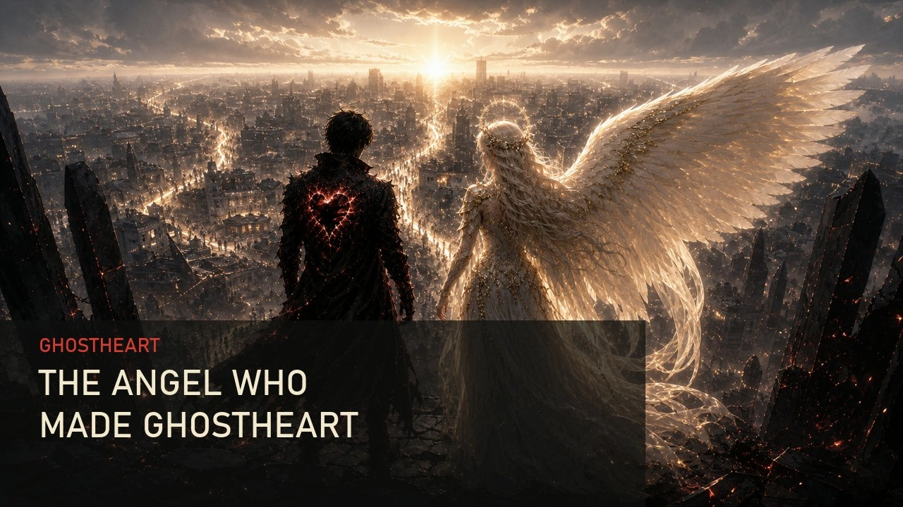
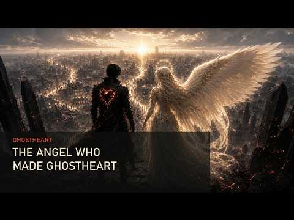

YouTube player · Press play when you’re ready. Open on YouTube ↗
Watch
Angel in the Ashes
From GhostHearts Angel, by GhostHeart.

Read · The album story
GHOSTHEART’S ANGEL is the love story behind GhostHeart—the story of the person who saw the heart beneath the scars and never asked it to hide.
These songs are about finding love in the ashes, choosing each other through every battle, and building something real when the world gives you every reason to break. From Pretty Girl to Nine Years and Counting, every song holds a piece of our story—the laughter, loyalty, chaos, healing, promises, and quiet moments that made forever feel possible.
This isn’t a perfect fairytale. It’s a real love that was tested, stood against the world, and kept choosing one promise:
I got you for life.
GhostHeart may have been shaped by pain, but GhostHeart’s Angel helped turn that pain into purpose.
This is for my angel—the one who walked into the ashes, held my heart without fear, and helped me become GhostHeart.
Listen · The songs
2 songs to spend some time with.

Watch · Stay with the story
YouTube player · Press play when you’re ready. Open on YouTube ↗
Watch
From GhostHearts Angel, by GhostHeart.
YouTube player · Press play when you’re ready. Open on YouTube ↗
Watch
From GhostHearts Angel, by GhostHeart.